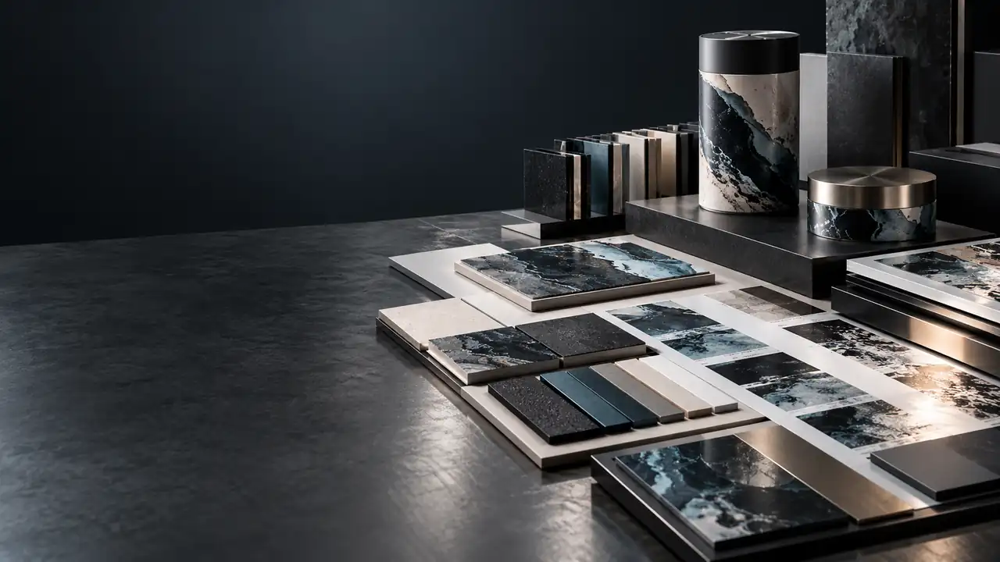
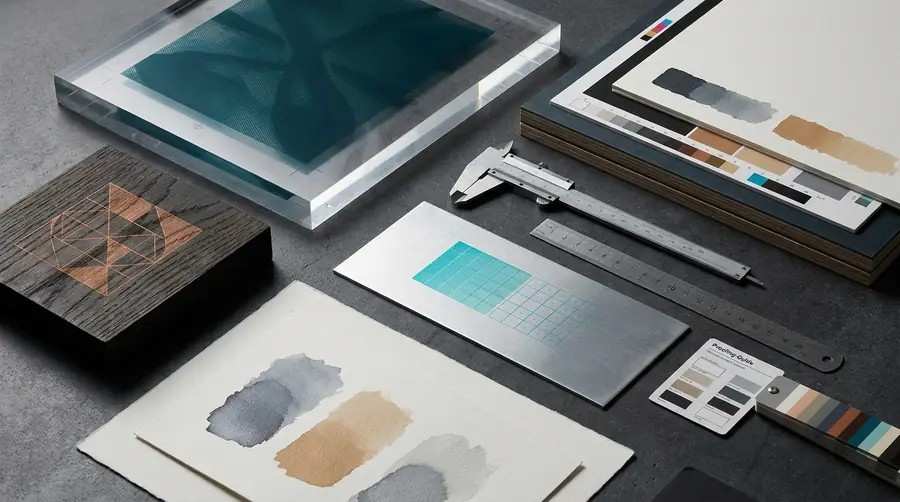

GLASS / METAL
Precision at the edge.
Labels and decorative transfers can introduce fine marks to a smooth object. Shape, handling, placement and the actual surface guide the application.
Review: object shape · finish · placement · expected handling
HDC / SURFACE LAB
A working index of printed surfaces. Look closely at the object, its texture and its intended use before choosing a production route.
The studies are visual references. Every application requires material and artwork review.

01 / PRINCIPLE
A print changes when its substrate changes.
Texture, geometry, preparation and handling affect the result. We examine the actual object or stock, then select a suitable way to print or apply the graphic. The final recommendation depends on the confirmed job.
OBSERVE / TEST / SPECIFY
GLASS / METAL
Labels and decorative transfers can introduce fine marks to a smooth object. Shape, handling, placement and the actual surface guide the application.
Review: object shape · finish · placement · expected handling

RIGID OBJECTS
Flat or shaped items call for different production decisions. Artwork scale, usable area and contact points are reviewed against the physical piece.
Review: material · geometry · artwork · test area

PAPER / BOARD
Packaging and commercial print depend on stock, artwork, folds and finish. The route is selected around the intended piece and production requirements.
Review: stock · format · folds · finish

BUILT ENVIRONMENTS
Large-format work is planned for its viewing distance, installation context and confirmed substrate. Site dimensions and conditions inform the specification.
Review: dimensions · viewing distance · substrate · installation
Share the actual material, shape, dimensions and intended use.
Review coverage, colour, placement and available print area.
Evaluate suitability and agree on a production route for the specific job.
04 / PROJECT ENQUIRY
Send the object or material, dimensions, quantity, artwork status and intended use. A photograph helps us begin; a physical sample may be needed before we confirm production.
Start a project